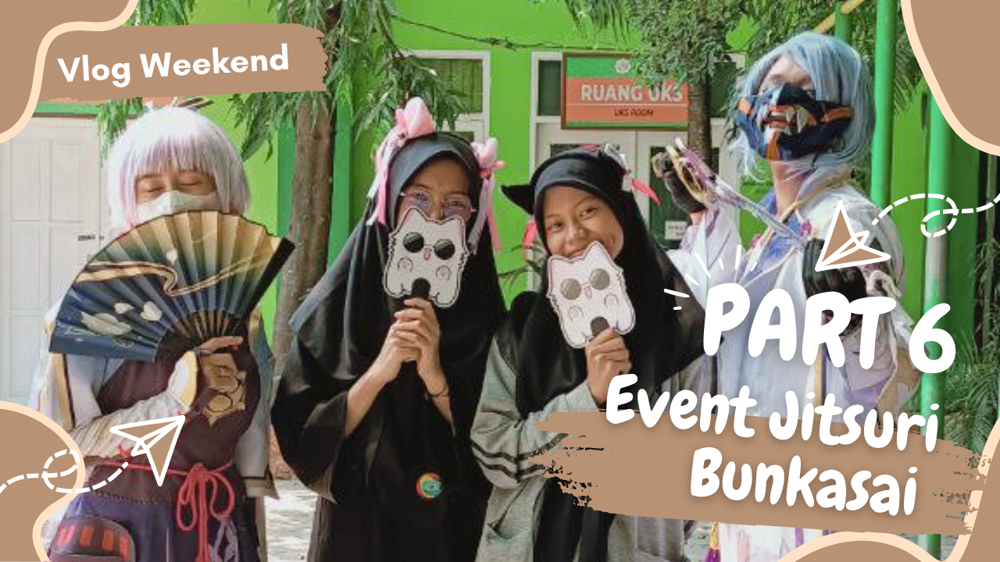
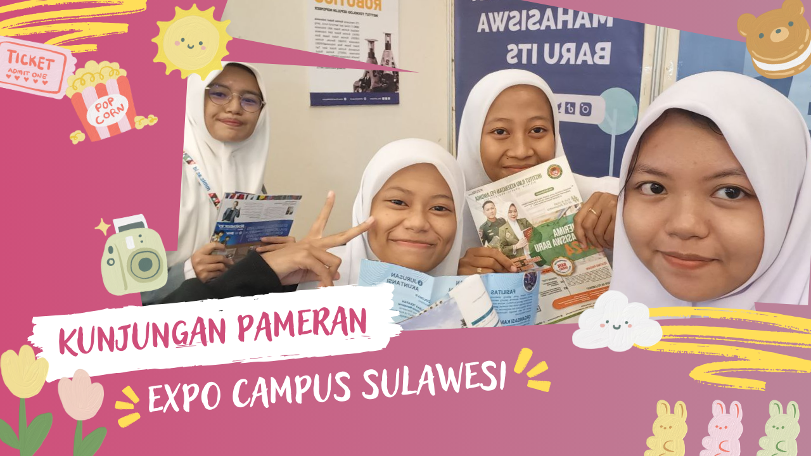
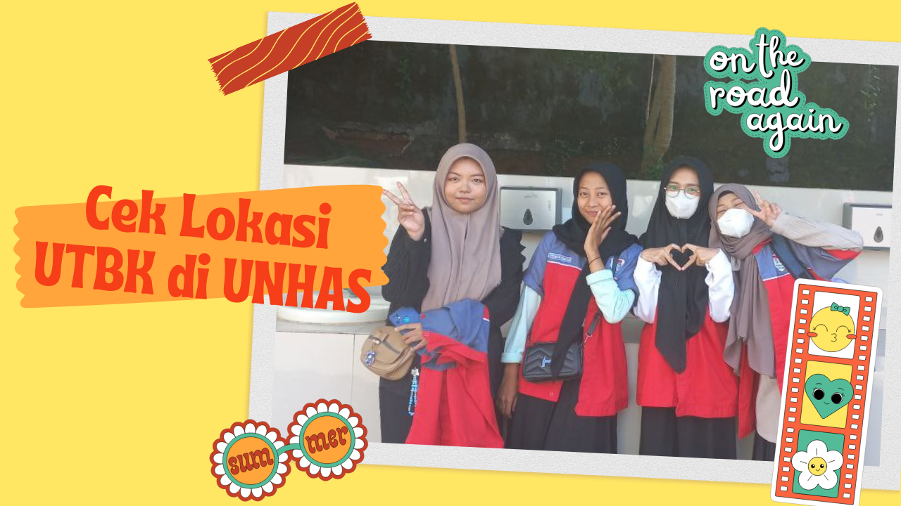
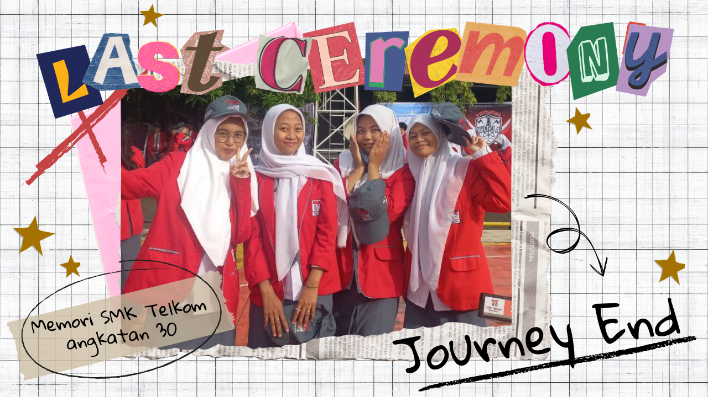
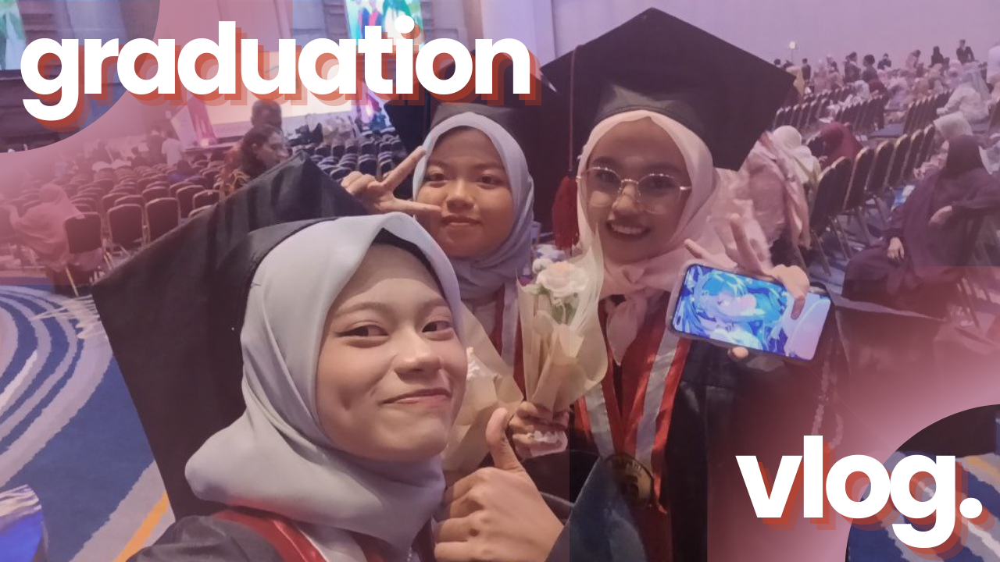
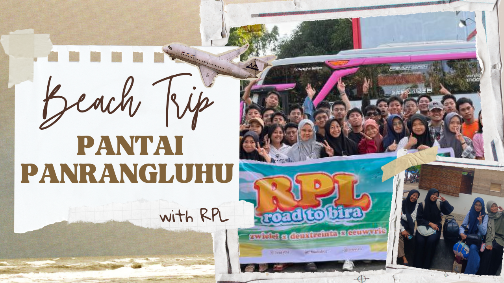
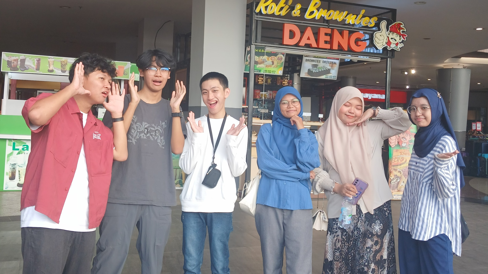
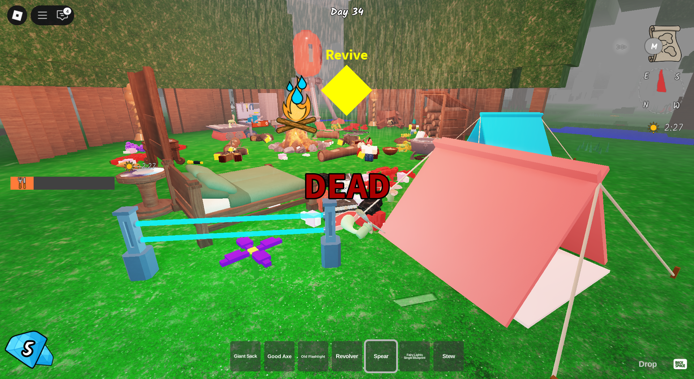
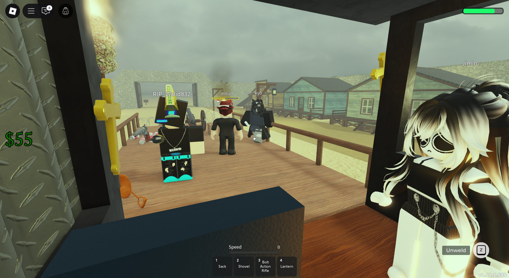

Event Jitsuri Bunkasai MAN 2
Kali ini kita buka booth buat pendanaan ekskul tercinta kita "Gradasi" di telkom, seru banget loh kegiatannya.
Watch on YouTubeCute n Crazy - the best of the besties
Haii~ Selamat datang di dunia 4teletubbies! 🥳 Kami empat sahabat dengan karakter yang beda-beda tapi nyambung terus—Fizz yang ceria & kadang random, Pute yang berani dan suka bikin heboh, Lia yang bijak tapi tetep bisa gokil, dan Shifa yang… yaaa kadang jadi sunshine tapi juga suka kepo 😎☀️. Diary ini jadi tempat kami nyimpen semua momen konyol, seru, dan kadang dramatis (tapi tetap lucu 😆). Dari jalan-jalan random, piknik santai, sampai nyanyi-nyanyi gak jelas bareng—semua tercatat di sini. Pokoknya, 4teletubbies itu: tawa banyak, hati hangat, dan selalu ada buat satu sama lain. 💜✨

Kali ini kita buka booth buat pendanaan ekskul tercinta kita "Gradasi" di telkom, seru banget loh kegiatannya.
Watch on YouTube
Ini acara paling seru yang pernah kami ikuti, kami bawa pulang banyak brosur dari berbagai universitas.
Watch on YouTube
Touring ke UNHAS buat cek lokasi UTBK, ternyata asik juga, tapi nyari ruangannya beneran bikin kita kelilingin kampus nya.
Watch on YouTube
Perpisahan angkatan, penuh foto, tawa, dan kenangan manis yang bakal kita inget selamanya.
Watch on YouTube
Pencapaian kita gak berakhir disini, selamat menempuh kehidupan baru disana, tapi jangan pernah lupa satu sama lain, keep in touch ya!
Watch on YouTube
Ini beneran momen kita liburan bareng anak jurusan RPL, tapi ingat ini bukan yang terakhir ya.
Watch on YouTube
Liburan terakhir kali tuh seru banget! 😎✨ Awalnya Joan mau nonton film sendiri, tapi kita bujuk dia buat ngajak kita. Akhirnya berangkat berenam Shifa, Lia, Pika, Patib, Joan, dan Dzaki. Pute lagi di kampung, jadi nggak ikut—eh, tapi vibes-nya tetep ada di hati 😆💜

Kita masih belum tamat 99 Night in the Forest, tapi serunya gak kalah sama Dead Rails. 😆 Hutan panjang, monster bikin deg-degan, tapi tiap kali gagal kita malah ketawa bareng. Kadang Joan jadi bodyguard kita, Fizz jago banget kumpulin barang, Lia yang nge carry kita dan Shifa? Cuma bisa bilang “yaaahhh…” sambil ngakak. 🌲👻

Akhirnyaaa, kita berhasil nuntasin Dead Rails di Roblox! 😎💥 semuanya seru banget. Oh iya, Joan juga ikut bantuin strategi, jadi misi kita makin kompak. Ini bukti kalau kerja sama & tawa itu kunci kemenangan! 🚂🎮 btw adik nya Shifa ikutan juga dan malah ngelawak 😭👍
Follow kami di @4teletubbies, sering sering mampir ya ♥️